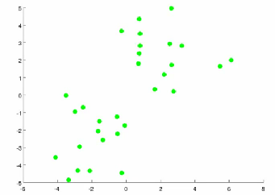

13: Clustering
Unsupervised learning - introduction
- Talk about clustering
- Learning from unlabeled data
- Unsupervised learning
- Useful to contrast with supervised learning
- Compare and contrast
- Supervised learning
- Given a set of labels, fit a hypothesis to it
- Unsupervised learning
- Try and determine structure in the data
- Clustering algorithm groups data together based on data features
- Supervised learning
- What is clustering good for
- Market segmentation - group customers into different market segments
- Social network analysis - Facebook "smartlists"
- Organizing computer clusters and data centers for network layout and location
- Astronomical data analysis - Understanding galaxy formation
K-means algorithm
- Want an algorithm to automatically group the data into coherent clusters
- K-means is by far the most widely used clustering algorithm
Overview
- Take unlabeled data and group into two clusters

- Algorithm overview
- 1) Randomly allocate two points as the cluster centroids
- Have as many cluster centroids as clusters you want to do (K cluster centroids, in fact)
- In our example we just have two clusters
- 2) Cluster assignment step
- Go through each example and depending on if it's closer to the red or blue centroid assign each point to one of the two clusters
- To demonstrate this, we've gone through the data and "colour" each point red or blue

- 3) Move centroid step
- Take each centroid and move to the average of the correspondingly assigned data-points

- Repeat 2) and 3) until convergence
- Take each centroid and move to the average of the correspondingly assigned data-points
- 1) Randomly allocate two points as the cluster centroids
- More formal definition
- Input:
- K (number of clusters in the data)
- Training set {x1, x2, x3 ..., xn)
- Algorithm:
- Randomly initialize K cluster centroids as {μ1, μ2, μ3 ... μK}
The two halves are the whole algorithm: the first loop assigns every example to its nearest centroid, the second moves every centroid to the mean of the examples just assigned to it. Repeat until nothing moves.
import numpy as np X = np.array([[1.0, 1], [1.5, 2], [1, 1.5], # three points near (1, 1.5) [8, 8], [8.5, 9], [8, 8.5]]) # three points near (8, 8.5) mu = X[[0, 3]].copy() # init on two random examples for _ in range(10): c = np.array([((x - mu) ** 2).sum(1).argmin() for x in X]) # assignment step mu = np.array([X[c == k].mean(0) for k in range(2)]) # move step c # [0, 0, 0, 1, 1, 1] - the two clusters, found mu # [[1.17, 1.5], [8.17, 8.5]] - each centroid at its cluster's mean
The whole algorithm on six points: the assignment step is the argmin from the box above, the move step is the mean, and two clusters fall out.
- Loop 1
- This inner loop repeatedly sets the c(i) variable to be the index of the cluster centroid closest to xi
- i.e. take ith example, measure squared distance to each cluster centroid, assign c(i)to the cluster closest
The slide draws an arrow from the minimisation to c(i): what gets stored is not the distance but the k that attains it, so this is strictly an argmin. Squaring makes no difference to which k wins, and it is the form that matches the cost function below.
- Loop 2
- Loops over each centroid calculating the average mean based on all the points associated with each centroid from c(i)
- Loop 1
- What if there's a centroid with no data
- Remove that centroid, so end up with K-1 classes
- Or, randomly reinitialize it
- Not sure when though...
- Randomly initialize K cluster centroids as {μ1, μ2, μ3 ... μK}
- Input:
K-means for non-separated clusters
- So far looking at K-means where we have well defined clusters
- But often K-means is applied to datasets where there aren't well defined clusters
- e.g. T-shirt sizing

- e.g. T-shirt sizing
- Not obvious discrete groups
- Say you want to have three sizes (S,M,L) how big do you make these?
- One way would be to run K-means on this data
- May do the following

- So creates three clusters, even though they aren't really there
- Look at first population of people
- Try and design a small T-shirt which fits the 1st population
- And so on for the other two
- This is an example of market segmentation
- Build products which suit the needs of your subpopulations
K means optimization objective
- Supervised learning algorithms have an optimization objective (cost function)
- K-means does too
- K-means has an optimization objective like the supervised learning functions we've seen
- Why is this good?
- Knowing this is useful because it helps for debugging
- Helps find better clusters
- While K-means is running we keep track of two sets of variables
- ci is the index of clusters {1,2, ..., K} to which xi is currently assigned
- i.e. there are m ci values, as each example has a ci value, and that value is one of the clusters (i.e. can only be one of K different values)
- μk, is the cluster associated with centroid k
- Locations of cluster centroid k
- So there are K
- So these the centroids which exist in the training data space
- μci, is the cluster centroid of the cluster to which example xi has been assigned
- This is more for convenience than anything else
- You could look up that example i is indexed to cluster j (using the c vector), where j is between 1 and K
- Then look up the value associated with cluster j in the μ vector (i.e. what are the features associated with μj)
- But instead, for easy description, we have this variable which gets exactly the same value
- Lets say xi has been assigned to cluster 5
- Means that
- ci = 5
- μci, = μ5
- Means that
- This is more for convenience than anything else
- ci is the index of clusters {1,2, ..., K} to which xi is currently assigned
- Using this notation we can write the optimization objective;
The mean squared distance from each example to the centroid it was assigned to. Both steps of the algorithm above reduce it, which is why K-means converges.
((X - mu[c]) ** 2).sum(1).mean() # J = 0.222 - the distortion at convergenceThe distortion of the clustering just found — mu[c] lines each example up against its own centroid, so the whole cost is one line.
- i.e. squared distances between training example xi and the cluster centroid to which xi has been assigned
- This is just what we've been doing, as the visual description below shows;

- The red line here shows the distances between the example xi and the cluster to which that example has been assigned
- Means that when the example is very close to the cluster, this value is small
- When the cluster is very far away from the example, the value is large
- This is just what we've been doing, as the visual description below shows;
- This is sometimes called the distortion (or distortion cost function)
- So we are finding the values which minimizes this function;
Minimised over both sets of variables at once — the assignments and the centroid positions.
- i.e. squared distances between training example xi and the cluster centroid to which xi has been assigned
- If we consider the k-means algorithm
- The cluster assigned step is minimizing J(...) with respect to c1, c2 ... ci
- i.e. find the centroid closest to each example
- Doesn't change the centroids themselves
- The move centroid step
- We can show this step is choosing the values of μ which minimizes J(...) with respect to μ
- So, we're partitioning the algorithm into two parts
- First part minimizes the c variables
- Second part minimizes the μ variables
- The cluster assigned step is minimizing J(...) with respect to c1, c2 ... ci
- We can use this knowledge to help debug our K-means algorithm
Random initialization
- How we initialize K-means
- And how to avoid local optimum
- Consider clustering algorithm
- Never spoke about how we initialize the centroids
- A few ways - one method is most recommended
- Never spoke about how we initialize the centroids
- Have number of centroids set to less than number of examples (K < m) (if K > m we have a problem)
- Randomly pick K training examples
- Set μ1 up to μK to these example's values
- K means can converge to different solutions depending on the initialization setup
- Risk of local optimum

- The local optimum are valid convergence, but local optimum not global ones
- Risk of local optimum
- If this is a concern
- We can do multiple random initializations
- See if we get the same result - many same results are likely to indicate a global optimum
- We can do multiple random initializations
- Algorithmically we can do this as follows;
K-means only finds a local optimum, and which one depends on where the centroids start. Running it many times and keeping the clustering with the lowest distortion is the standard fix.
- A typical number of times to initialize K-means is 50-1000
- Randomly initialize K-means
- For each of the 100 random initializations run K-means
- Then compute the distortion on the set of cluster assignments and centroids at convergence
- End with 100 ways of clustering the data
- Pick the clustering which gave the lowest distortion
- If you're running K means with 2-10 clusters this can help find better global optimum
- If K is larger than 10, then multiple random initializations are less likely to be necessary
- First solution is probably good enough (better granularity of clustering)
How do we choose the number of clusters?
- Choosing K?
- Not a great way to do this automatically
- Normally use visualizations to do it manually
- What are the intuitions regarding the data?
- Why is this hard
- Sometimes very ambiguous
- e.g. two clusters or four clusters
- Not necessarily a correct answer
- This is why doing it automatic this is hard
- Sometimes very ambiguous
Elbow method
- Vary K and compute cost function at a range of K values
- As K increases J(...) minimum value should decrease (i.e. you decrease the granularity so centroids can better optimize)
- Plot this (K vs J())
- Look for the "elbow" on the graph

- Chose the "elbow" number of clusters
- If you get a nice plot this is a reasonable way of choosing K
- Risks
- Normally you don't get a nice line -> no clear elbow on curve
- Not really that helpful
Another method for choosing K
- Using K-means for market segmentation
- Running K-means for a later/downstream purpose
- See how well different number of clusters serve your later needs
- e.g.
- T-shirt size example
- If you have three sizes (S,M,L)
- Or five sizes (XS, S, M, L, XL)
- Run K means where K = 3 and K = 5
- How does this look

- This gives a way to choose the number of clusters
- Could consider the cost of making extra sizes vs. how well distributed the products are
- How important are those sizes though? (e.g. more sizes might make the customers happier)
- So applied problem may help guide the number of clusters
- T-shirt size example